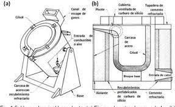
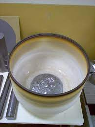

Marcelo Ávila, Luis Llanos 8 examinaron un procedimiento completo para la fabricación de un crisol con base de arcillas, y otros componentes en un molde de yeso para ser usado como refractario para fundir metales y aleaciones no ferrosas. Se elaboraron cuatro tipos de crisoles con diferentes capacidades, utilizando caolín, sílice, feldespato entre otros materiales, finalmente se obtuvieron crisoles con propiedades como; alta refractariedad, estabilidad volumétrica, resistencia al choque térmico y estabilidad química frente a gases, vapores y escorias, siendo estas características necesarias para la fusión de metales no ferrosos. Irán Peña 9 Construyó un crisol de grafito a partir de los procesos de maquinado con arranque de virutas. El crisol fue diseñado con forma geométrica cónica, con 7 RAMOS RAMÍREZ, Esthela; GUZMÁN ANDRADE, Juan José; SANDOVAL JUÁREZ, Ma. Carmen; GALLAGA ORTEGA, Yolanda. Caracterización de arcillas del Estado de Guanajuato y su potencial aplicación en cerámica. Acta Universitaria, vol. 12, núm. 1, abril, (2002), p. 23-30 8 ÁVILA BERNAL, Marcelo. GAVINO JIMENEZ, Paolo Jesús. GONZALES FLORES, Gianmarco. Llanos López, Luis Andrés. Elaboración del crisol refractario. Universidad Nacional José Faustino Sánchez Carrión. Ingeniería Metalúrgica. Huacho, Perú. 9 PEÑA HECHAVARRIA, Irán Construcción de un crisol de grafito para la fusión de ferroaleaciones a escala de laboratorio. Trabajo de diploma en opción de título de Ingeniero Mecánico. Ministerio de Educación Superior Instituto Superior Minero Metalúrgico de Moa. Facultad Metalurgia-Electromecánica. Departamento de Mecánica. (2016)
Estos minerales están constituidos de láminas de tetraedros con una composición química general de Si2O5, en donde cada tetraedro (SiO4) está unido por sus esquinas a otros tres formando una red hexagonal. Átomos de aluminio y hierro pueden reemplazar parcialmente al silicio en la estructura. Los átomos de oxígeno ubicados en los ápices de los tetraedros de estas láminas pueden, al mismo tiempo, formar parte de otra lámina paralela compuesta por octaedros. Estos octaedros suelen estar coordinados por cationes de Al, Mg, Fe3+ y Fe2+, es decir, los átomos de estos elementos ocupan la posición central del octaedro. Más infrecuentemente átomos de Li, V, Cr, Mn, Ni, Cu o Zn ocupan dicho sitio de coordinación. Las superficies de los minerales de la arcilla pueden adsorber iones y moléculas debido a que están cargadas de electricidad estática.
Las proporciones optimas entre el material y el líquido dependen del proceso de formado que se usa. Algunos procesos de formado requieren alta fluidez; otros actúan sobre una composición que tiene bajo contenido de agua, con cerca del 50 % de agua, la mezcla es una pasta aguada que fluye como un líquido. Al reducirse el contenido de agua, se hace necesario aumentar la presión sobre la pasta para producir un flujo similar. Por tanto, los procesos de formado pueden dividirse con base en la consistencia de la mezcla:Fundición o vaciado deslizante, en el cual la mezcla es una pasta aguada. 29 Métodos de formado plástico, en los cuales se forma la arcilla en condición plástica. Prensado semiseco, en el cual la arcilla está húmeda pero posee baja plasticidad. Prensado seco, en el cual la arcilla contiene menos del 5% de agua, esta arcilla no tiene plasticidad. 29 Vaciado deslizante: en este método se vacía una pasta aguada de polvos cerámicos en agua, llamada suspensión, dentro de un molde poroso de yeso, el agua de la mezcla es absorbida por el yeso, formándose una capa de arcilla firme en la superficie del molde, la composición es típicamente entre el 25% y el 50% de agua. La suspensión debe ser fluida para penetrar en los resquicios de la cavidad del molde, pero también es conveniente que el contenido de agua sea bajo para lograr mayores velocidades de producción. El vaciado en suspensión tiene dos variantes principales: vaciado drenado y vaciado sólido. En el vaciado drenado, el molde se invierte para drenar el exceso de suspensión después que se ha formado la capa semisólida, dejando así una parte hueca en el molde; este se abre después y se remueve la pieza. Este método se usa para hacer piezas huecas. En el vaciado sólido, que se usa para elaborar productos sólidos, se da el tiempo suficiente para que la pieza entera se vuelva firme. El molde debe rellenarse periódicamente con suspensión adicional para compensar la contracción debido a la absorción de agua.
Fuente: GROOVER, Mikell P. Fundamentos de manufactura moderna: materiales, procesos y sistemas Prentice Hall, Inc. A Simon y Schuster Company. (1997), P423 Formado plástico: Esta categoría incluye varios métodos manuales y mecanizados: modelado a mano, torneado de mano, torneado ligero, tejuelado, formado plástico y extrusión. Todos estos métodos requieren que la mezcla inicial tenga consistencia plástica, lo cual se logra generalmente con un contenido de agua del 15% al 25%. Para los métodos manuales se usan generalmente arcillas en el límite superior del rango, que constituyen un material más fácil de formar; sin embargo, esto viene acompañado de mayor contracción en el secado. Los métodos mecanizados emplean generalmente mezclas con menor contenido de agua y por lo tanto la arcilla inicial es más espesa.
Fuente: GROOVER, Mikell P. Fundamentos de manufactura moderna: materiales, procesos y sistema Prentice Hall, Inc. A Simon y Schuster Company. (1997), P 425 Prensado semiseco: En el prensado semiseco las proporciones de agua en el barro inicial están típicamente de 10% a 15%, esta proporción produce una baja plasticidad. Los procesos semisecos usan alta presión para superar la baja plasticidad del material y forzarlo dentro de la cavidad de un dado. Con frecuencia se forma una rebaba debido al exceso de barro que se introduce entre las secciones del dado. 29-30 Prensado seco: el contenido de humedad del barro inicial en el prensado seco esta típicamente por debajo del 5%. Generalmente se agregan aglutinantes a la mezcla de polvos para proporcionar suficiente resistencia a la parte prensada para su manejo subsiguiente. También se añaden lubricantes para prevenir que la pieza se pegue al dado durante el prensado y la remoción. Como la arcilla seca no fluye durante el prensado, se debe agregar y distribuir en el dado la cantidad correcta de polvo inicial. No se forman rebabas en el prensado seco y no ocurre contracción de secado, así que el tiempo de secado se elimina, lográndose una buena precisión en las dimensiones del producto final.
Este proceso es muy importante ya que elimina el agua no combinada (intersticial), la no absorbida y la enlazada químicamente, la cual puede secarse al ambiente o empleando circulación de aire con humedad controlada, donde los valores de temperatura y humedad deben ser inversamente proporcionales. La velocidad de difusión del agua depende de la temperatura a la que está expuesta la pieza, naturaleza mineralógica del material, magnitud y forma de las partículas, porcentaje de agua en la pasta, estado higrométrico, y humedad relativa del aire
Para la realización de este ensayo se empleó el valor de espaciado 2Ɵ (donde Ɵ es el ángulo de refracción) de acuerdo a la ley de Bragg. Para el análisis se tuvieron en consideración las posiciones características de los componentes de mayor importancia. El difractograma , señala que el material de estudio presenta sílice (SiO2), seguido de caolinita (Al2 Si2O5 (OH)4) y (MgO). La presencia de la caolinita muestra que la arcilla tiene propiedades plásticas y alta refractariedad, la sílice actúa como desengrasante evitando contracciones y deformaciones de volumen del cuerpo cerámico. Por lo cual la arcilla de estudio es apta para ser utilizada en cerámicos refractarios